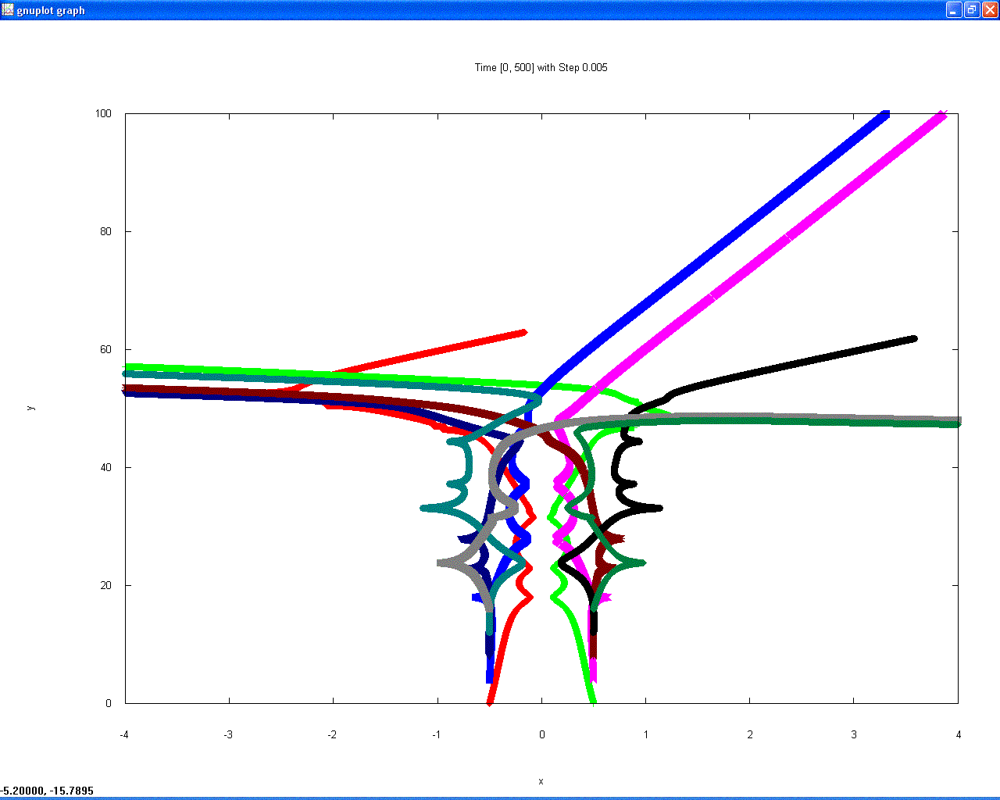
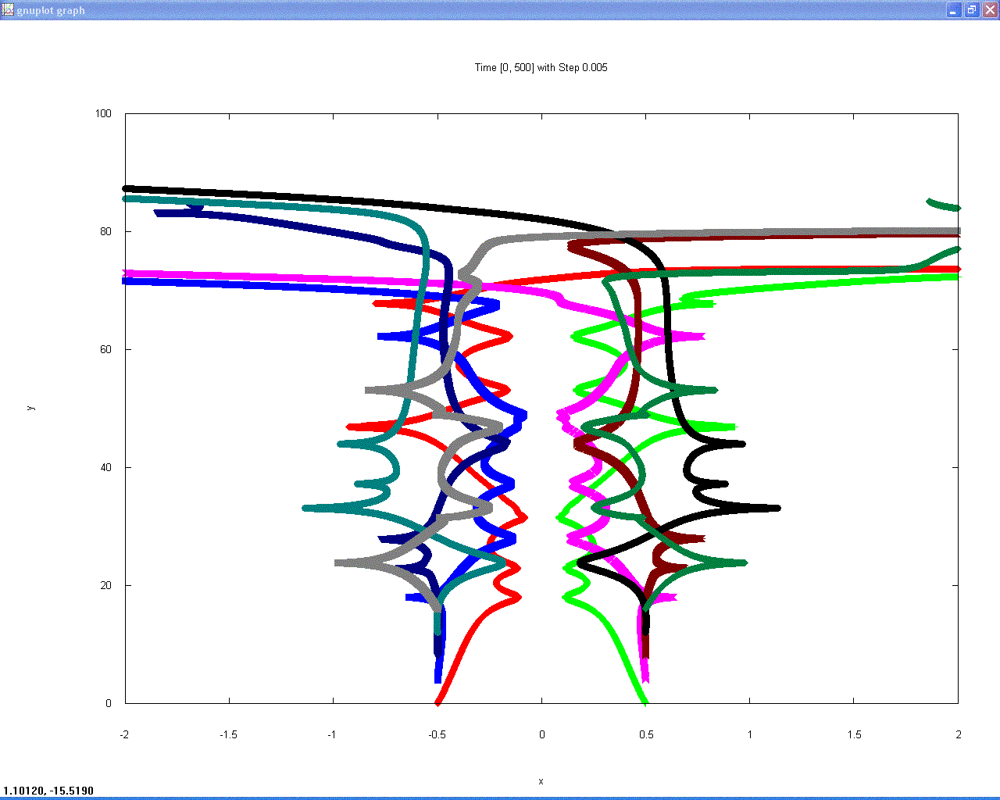

Thes are both plots of a herd of vortices moving through a fluid, both
integrated with RK4 and the same time step.  The left-hand plot used
"floats" to store state variables, and the right-hand plot used
"doubles."


<TABLE BORDER=0 CELLSPACING=8 CELLPADDING=8>
<TR ALIGN=Center>

<TD><A HREF="vortices-float.gif" height="500"
onMouseMove="window.status='Show this image a little larger'; return
true"></A></TD>


<TD><A HREF="vortices-double.gif" height="500"
onMouseMove="window.status='Show this image a little larger'; return
true"></A></TD>

</TR>
</TABLE>

Images courtesy of Natalie Ross, 2004.